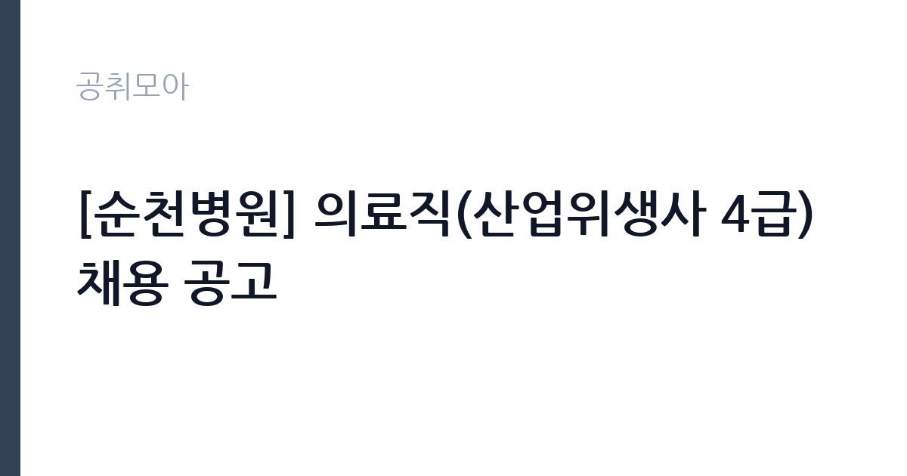

[공공기관] [순천병원] 의료직(산업위생사 4급) 채용 공고
근로복지공단 · 전남광주 · 마감 2026-11-13 (D-10) · 출처 잡알리오

한눈에 보는 모집 조건
| 기관 | 근로복지공단 |
|---|---|
| 공고명 | [순천병원] 의료직(산업위생사 4급) 채용 공고 |
| 고용형태 | 정규직 |
| 근무지 | 전남광주 |
| 게시일 | 2026-11-03 |
| 마감일 | 2026-11-13 (D-10) |
지원자격, 이렇게 읽으세요
- 산업위생사: 산업보건지도사 또는 산업위생관리기술사 자격증 소지자로서 산업위생관리(산업)기사 이상의 자격취득 후 5년 이상 당해 업무에 근무한 경력이있는자
- ※ 모든 전형 응시자격은 응시원서 마감일 기준
정규직 채용은 기간의 정함이 없는 근로계약을 전제로 합니다. 수습 기간을 두고 평가한 뒤 정규직으로 확정하는 절차가 일반적이며 기관의 인사 규정과 임금 체계를 적용받습니다. 이번 공고는 근로복지공단에서 직접 진행하는 자체 전형으로, 응시자격과 제출서류는 공고문에 항목별로 제시됩니다. 산업위생사 요건은 산업보건지도사 또는 산업위생관리기술사 자격증 소지자로서, 산업위생관리기사 이상 자격을 취득한 뒤 5년 이상 해당 업무에 근무한 경력이 있어야 합니다. 자격과 경력을 모두 갖춰야 하므로 한쪽만으로는 지원할 수 없습니다. 모든 전형의 응시자격은 응시원서 마감일 기준으로 판단합니다. 병역의무 불이행 사실이 없어야 하고, 군 복무 중이면 임용예정일 이전 전역이 가능해야 합니다. 연령 제한은 없지만 임용일 기준 만 60세 미만이어야 합니다. 서류는 접수 마감 이후 보완이 되지 않으므로 자격 요건과 증빙 서류를 마감 전에 모두 갖춰야 합니다. 공고문에 명시된 우대 사항은 해당 여부를 확인해 증빙을 첨부해야 가점이 반영됩니다. 학력이나 전공 요건이 없는 공고라도 제출서류 목록은 그대로 적용되므로 서류 준비 부담은 줄지 않습니다. 이 공고 원문에 적힌 응시 조건 문구는 '산업위생사: 산업보건지도사 또는 산업위생관리기술사 자격증 소지자로서 산업위생관리(산업)기사 이상의 자격취득 후 5년 이상 당해 업무에 근무한 경력이있는자' / '※ 모든 전형 응시자격은 응시원서 마감일 기준' / '연령요건: 연령제한 없음(단, 임용일 기준 60세 미만(정년)인 자)'입니다. 문구를 그대로 읽고 본인 해당 여부를 하나씩 표시해 두면 서류 단계에서 탈락하는 일을 줄일 수 있습니다.
이 공고의 포인트
이 공고의 첫 번째 포인트는 고용 형태입니다. 수습 기간 평가를 통과하면 기간의 정함이 없는 신분이 되어 고용이 안정됩니다. 두 번째는 업무 범위가 명확하다는 점입니다. 산업위생사(의료직 4급) 직무로 채용되므로 배치 이후 담당 업무가 크게 흔들리지 않습니다. 세 번째는 근무지입니다. 전남광주 지역 근무로 수도권 공고에 비해 지원자 분포가 넓지 않아 상대적으로 경쟁이 분산되는 경우가 있습니다. 모집 인원이 적은 만큼 지원자 한 명 한 명의 서류 완성도가 당락에 크게 작용합니다. 같은 직무로 함께 올라온 공고 9건 가운데 마감이 중간에 위치하므로 다른 공고와 일정이 겹치는지 확인하십시오. 선발 인원은 공고문에 명시되어 있으니 모집분야 항목을 함께 확인하십시오.
전형은 어떻게 진행되나
1차 서류, 2차 면접의 2단계로 진행되는 구성이 일반적입니다. 서류에서는 자격 요건과 경력 증빙을 확인하고, 면접에서는 실제 업무 수행 능력과 조직 적응을 봅니다. 직무에 따라 필기시험이나 실기, 컴퓨터 활용 시험이 추가되기도 하므로 공고문의 전형표를 먼저 확인하십시오. 단계별로 합격자만 다음 전형에 응시할 수 있고, 단계마다 응시 자격 확인 서류를 다시 제출해야 하는 경우가 있습니다. 최종합격자 발표 후에는 신원조회와 채용 신체검사가 남아 있습니다. 제출서류 원본은 최종 단계에서 다시 요구되는 경우가 있어 사본과 함께 보관하십시오.
원문에서 확인한 전형 방식
○ 채용분야 응시자격 - 산업위생사: 산업보건지도사 또는 산업위생관리기술사 자격증 소지자로서 산업위생관리(산업)기사 이상의 자격취득 후 5년 이상 당해 업무에 근무한 경력이있는자 ※ 모든 전형 응시자격은 응시원서 마감일 기준 ○ 병역사항: 「병역법」 제76조에서 정한 병역의무 불이행 사실이 없는자 ※ 현재 군복무 중인 경우 임용예정일 이전 전역이 가능한 자 ○ 연령요건: 연령제한 없음(단, 임용일 기준 60세 미만(정년)인 자)
이런 분께 추천해요
- 산업위생관리기사 취득 후 5년 이상 실무 경력이 있는 분
- 산업보건지도사나 산업위생관리기술사 자격을 보유한 분
- 사업장 측정과 개선 지도를 직접 수행할 수 있는 분
지원 전 체크리스트
- 응시자격 요건과 경력 기준을 충족하는가 — 경력은 증명서로 입증해야 합니다
- 수습 기간과 정규직 전환 조건을 확인했는가
- 제출서류 목록을 모두 준비했는가 — 누락 시 서류 단계에서 탈락합니다
- 접수 마감 2026-11-13 이전에 접수 방식을 확인해 제출했는가
모집 일정과 제출 타이밍
2026-11-03에 공고가 올라왔고 접수는 2026-11-13까지입니다. 남은 기간은 10일이며, 이 기간에 자격증 사본과 경력증명서, 주민등록등본 같은 기본 서류를 모두 준비해야 합니다. 경력증명서는 발급에 며칠이 걸리는 경우가 있으니 가장 먼저 신청하십시오. 접수는 온라인과 우편·방문으로 나뉘는 경우가 많고, 우편 접수는 도착 기준으로 판정되므로 마감일 소인만 믿으면 안 됩니다. 면접 일정은 서류 발표 후 개별 통보되므로 제출 후에도 연락을 받을 수 있도록 유지해야 합니다. 마감 이후에는 어떤 사유로도 접수가 인정되지 않으므로 하루 전 제출을 목표로 하십시오. 광주 근무지는 대중교통 노선이 제한적인 구역이 있어 통근 수단을 미리 점검하십시오. 마감까지 2주 안팎이 있어 준비할 시간은 있지만 미루면 촉박해집니다. 선발 인원은 공고문의 모집분야 항목에 직종별로 제시되어 있습니다.
직무 이해하기: 공공기관
근로복지공단 순천병원 산업위생사는 산재 근로자의 직업병 예방과 작업환경 관리 업무를 맡습니다. 사업장의 유해 요인을 측정하고 근로자 건강 보호를 위한 개선 방안을 제시합니다. 병원 내 작업환경 측정과 안전보건 관리, 근로자 건강 상담도 업무에 포함됩니다. 산재보험 의료기관 특성상 산업보건 자료와 진료 기록을 함께 다루게 되므로 개인정보 보호 요건이 엄격합니다. 정규직 4급 채용으로 수습 기간을 거쳐 확정됩니다. 현장 업무와 사무 업무의 비중은 기관의 사업 일정에 따라 계절별로 달라집니다.
자기소개서 작성 팁
지원서는 산업위생 경력을 자격 취득 시점과 측정 실적 중심으로 정리하는 것이 효과적입니다. 담당한 사업장 수와 측정 항목, 개선을 이끌어낸 사례를 수치로 제시하십시오. 산업보건지도사나 기술사 자격은 요건과 직결되므로 취득 연도를 분명히 밝히십시오. 산재 근로자 진료를 하는 공단 병원의 성격을 이해하고 있다는 점을 한 문단 더하면 좋습니다. 구성은 지원 동기, 직무 경험, 기여 방안 순서가 무난합니다. 지원 동기는 근로복지공단의 사업 중 본인이 관심을 가진 부분을 한 가지로 좁혀 서술하고 추상적인 표현은 줄이십시오. 직무 경험은 담당했던 업무와 규모, 결과를 수치로 제시하면 설득력이 올라갑니다. 기여 방안은 입사 후 첫 3개월과 1년 계획으로 나눠 쓰면 준비도가 드러납니다.
면접 준비 포인트
면접에서는 산업위생 실무를 구체적으로 확인합니다. 측정 대상 유해인자와 사용한 측정 장비, 결과 해석 방식, 개선 대책을 세운 경험을 답하십시오. 사업장이 측정 결과를 받아들이지 않을 때 어떻게 설득했는지도 질문 대상입니다. 병원 근무이므로 감염 관리와 개인정보 보호에 대한 인식도 평가에 포함됩니다. 답변은 상황, 판단, 조치의 순서로 정리하면 전달이 분명해집니다. 모르는 질문에는 모른다고 밝히고 확인 방법을 제시하는 편이 억지 답변보다 낫습니다. 마지막에는 근무 의사와 함께 2026-11-13 이후 일정에 언제든 응할 수 있다는 점을 전달하십시오. 마지막 질문 시간에는 근무 조건에 대한 확인 사항을 한 가지 정도 준비해 가면 성실성이 드러납니다.
급여·근무조건 읽는 법
근로복지공단은 알리오 2025년 결산 공시 기준 일반정규직 1인당 평균보수 6,828만원, 신입사원 초임 3,664만원입니다. 이번 채용은 4급 의료직으로 경력 인정에 따라 호봉이 정해지므로 공시 신입 초임보다 높게 책정될 수 있습니다. 평균보수는 기본급에 고정수당과 성과상여금, 급여성 복리후생비를 합산한 값입니다. 구체적인 금액과 수당 항목은 공고문 처우 부분에서 확인하십시오. 2026년 적용 최저임금은 시급 10,320원, 월 환산 2,156,880원(주 40시간·209시간 기준)입니다. 고용노동부 고시 제2025-47호로 확정된 금액입니다. 공고문에 금액이 제시되지 않은 항목은 원문 보수표나 처우 설명에서 확인해야 하며 확인되지 않은 수치는 쓰지 않는 것이 원칙입니다. 비교할 때는 월 급여뿐 아니라 상여·명절휴가비·복지포인트·초과근무수당까지 포함한 연간 총액으로 계산하십시오. 기간제라면 계약 기간 동안의 총액을, 무기계약이라면 호봉 상승과 정년까지의 누적 소득을 기준으로 판단하는 편이 정확합니다.
자주 묻는 질문
- 선발 인원은 몇 명인가요?
공고문의 모집분야 항목에 직종별 인원이 표로 제시되어 있습니다. 첨부된 공고문 원문에서 확인하십시오. - 근무지는 어디인가요?
전남광주 지역의 근로복지공단 소속 근무지입니다. 세부 주소와 출퇴근 조건은 원문 공고문에서 확인할 수 있습니다. - 보수는 얼마인가요?
채용 신분(정규직)과 기관 임금 규정에 따라 정해지며 구체적인 금액은 공고문 처우 항목에 제시됩니다. 금액이 공개되지 않은 경우에는 원문의 보수표를 확인하십시오.
함께 보면 좋은 공고
[공공기관] 한전KDN(주) 경남사업처 배전자동화 성능관리분야 비정규직 모집공고 — 마감 2026-11-18[공공기관] 한국폴리텍대학 남대구캠퍼스 업무직(대학운영직_조리사) 채용(2차) 공고 — 마감 2026-11-11[공공기관] 한국폴리텍대학 남대구캠퍼스 행정지원직원(휴직대체_학사지원직) 채용 공고 — 마감 2026-11-11출처: 잡알리오 공개정보를 바탕으로 공취모아가 정리한 안내글입니다. 모집 조건·일정은 변경될 수 있으니 지원 전 반드시 원문 공고문을 확인하세요. 본 글은 정보 제공용이며 합격을 보장하지 않습니다.